作為近期的話題鞋款，Stussy 與 Nike Air Zoom Spiridon Cage2 聯名，無疑為低迷的潮流市場注入活泉。不過你有沒有想過在茫茫Nike 經典鞋海中，這次是為何挑上 Air Zoom Spiridon Cage2 的？
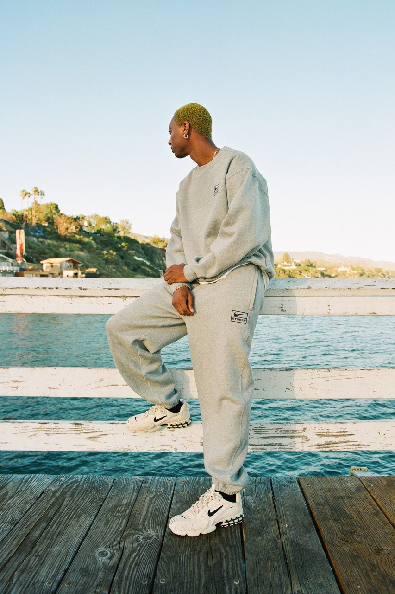
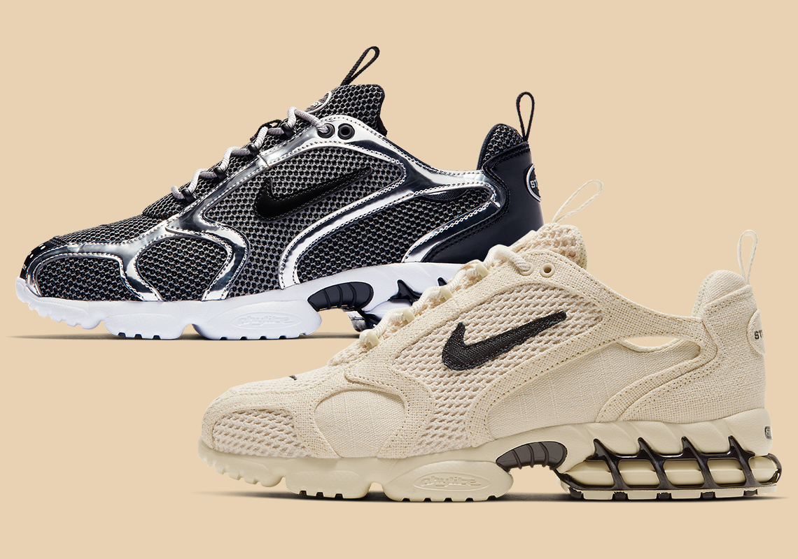
關於 Air Zoom Spiridon Cage 2
在此先簡述一下 Air Zoom Spiridon Cage 2 的歷史，於 2003 年問世，由球鞋教父 Steven Smith（現為 Yeezy 鞋履設計總監）打造。起初，Air Zoom Spiridon Cage 2 僅是為了熱愛跑步的消費者並針對日本市場所設計，力求輕量與快乾。
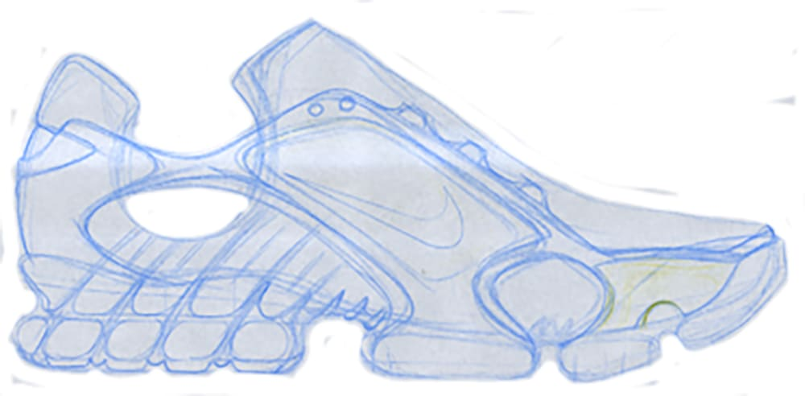
當初的 Spiridon 手稿 photo via Steven Smith（曾在Nike、Adidas和Reebok等等運動品牌效力）
由於日本人當時偏好輕巧的鞋款，Air Zoom Spiridon Cage 2 在日本一發售就造成轟動。回顧當時的盛況，Steven Smith 直言：「日本人真的很喜歡它們，當初我們預測的發售數目是 4 萬雙，並向鞋迷們預告這個數字，不料他們全都為之瘋狂，於是我們便把預估數量拉高到 8 萬雙。」
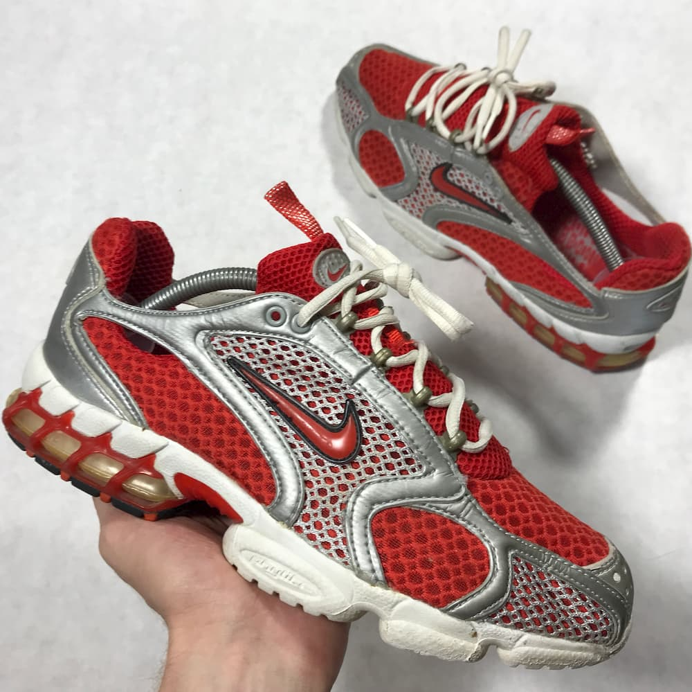Nike 這時才意識到這雙鞋有帶來更大商機的潛力，不過最初的版本為滿足日本消費者偏好，捨棄了使鞋子本身加重的裝飾。Steven Smith 回憶起當時 Nike 主管告訴他的意見：「人們對這雙鞋有很高的期望，我們需要做的就是擴大它的吸引力，希望鞋子能為『全球的消費者』做出微調。」而非只專注於原本的日本顧客，至於這個微調，就是在鞋的前端加上一塊橡膠。
「事實證明 Nike 的想法是對的。」Steven Smith說，最後這雙鞋在與全球零售商的銷售會議上被預訂了 80萬雙。
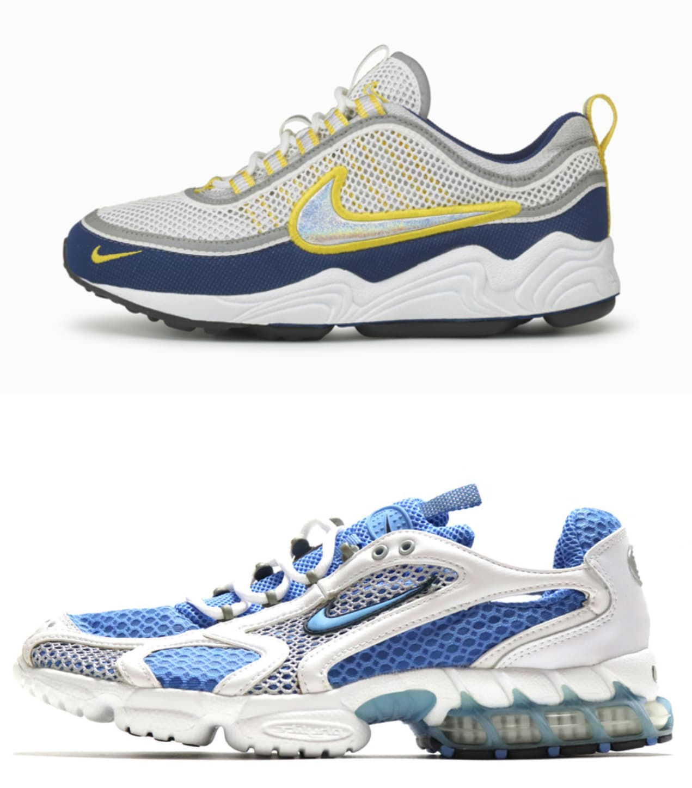
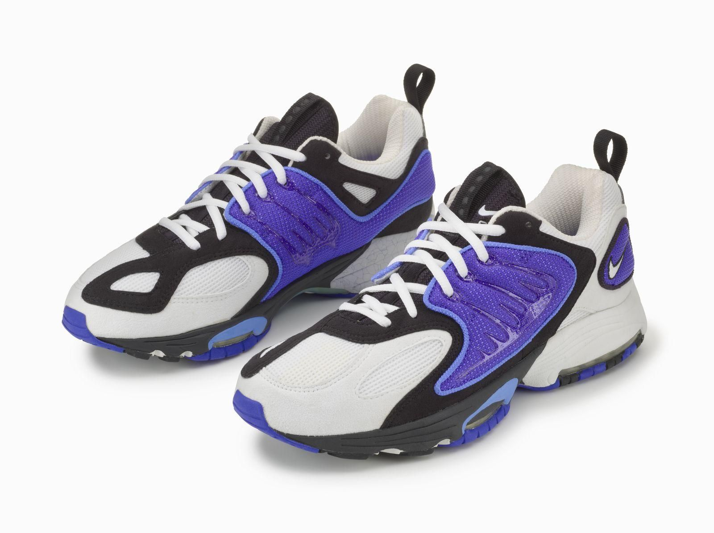
（上）Air Zoom Spiridon, 1997；（下）Air Zoom Spiridon Cage 2, 2003
那麼 Air Zoom Spiridon Cage 2 和 Air Zoom Spiridon 有何關係？
Steven Smith 解釋，雖名稱上看起來是 Air Zoom Spiridon 的下一代，但其部分設計靈感實際是來自 Zoom Citizen 的元素，因此 Cage 2 和 1997 年問世 Air Zoom Spiridon 基本外型已有相當大的區隔。
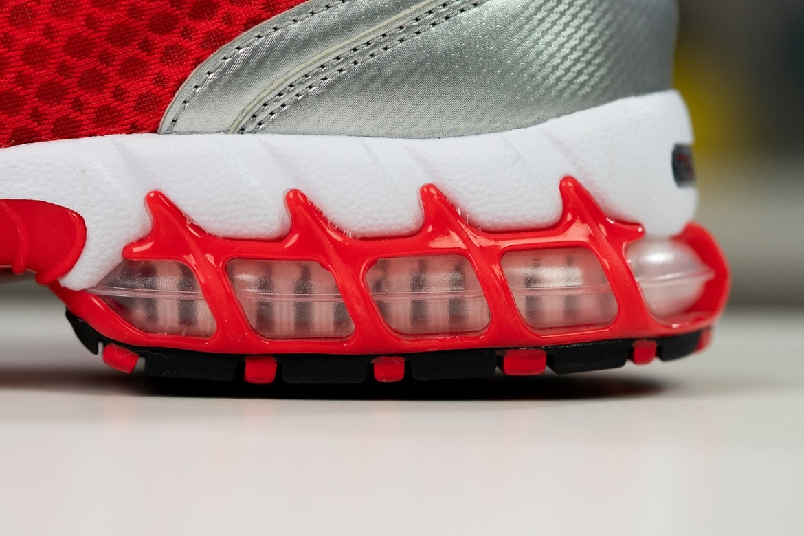
而 1999 年發售的 Zoom Citizen，其底部裸露 Zoom 的緩衝底在長期擠壓下容易凹陷，為改良此缺點，Steven Smith 在 Zoom 氣墊周圍加上網狀的「Pebax Cage」（Pedax 為一種塑料彈性材質，Cage 則是籠子、外殼之意），指的便是現在 Cage 2 鞋底看起來像包裹著氣墊的網狀支撐體（如下圖），為足底提供更好的彈跳力。
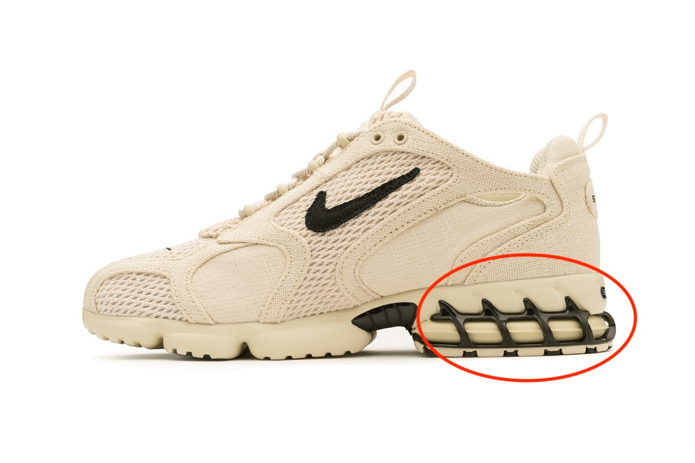
聯名的深意
話又說回來，為了讓老鞋款起死回生，Nike在近幾年的可說是不遺餘力，2018 年與 A-COLD-WALL* 聯名的 swoosh 和 zoom vomero 5 帶起的熱潮，使得該鞋款的原始版本又紛紛重新上架。同樣的手法在 2019 年與 Supreme 的聯名中，讓 1999 年推出的 Air Tailwind IV 又出現在大家眼前，與 Undercover 的數次聯名如 React Elements 87、Zoom Fly、React Presto 和 Daybreak 等等，也是一貫的策略。
對 Stussy 來說，聯名的首要任務就是盡可能使這雙鞋更具有魅力，首推基本款的兩色，消費者無論如何都能在兩種米、黑配色中挑到適合自己的，當然後續品牌還會釋出該鞋款其餘的配色，待這回沒搶到鞋的鞋迷們也能抓緊下回的發售。
至於搭配的服裝，品牌也早幫大家做好決定，一同推出的 Swoosh Logo 高領、灰色運動服套裝和托特包等基本款單品，無疑就是要讓你更用力的掏錢。
不過這種聯名模式與 Jordan 的經典鞋款復刻又有所不同，原因是在推出之前並沒有人在期待 Spiridon 這種鞋款再次發售，但先不論老鞋們是以何種方式無縫接軌進入今日的球鞋市場，對買賣雙方皆是一種勝利，也為炒作性極高的球鞋市場帶來了必要的活力。
或許我們不會知道下次要出現的老鞋是哪雙，可預期的是，延續聯名帶來的風潮，Nike 馬上又順勢推出原始 OG 配色的 Air Zoom Spiridon Cage2，共包括灰銀、紅銀（如下圖）兩色，預計於 4 月 13 日發售，發售詳情請至 Nike 官方查詢。
https://www.instagram.com/p/B-h2H2ZDZJq/
盤點 Stussy x Nike 經典聯名款
Stussy 與 Nike 的合作關係早就行之有年，以下我們為你盤點幾雙值得複習的經典好鞋。
- Air Huarache LE (2000)
- Stussy Nike Blazer Mid (2002)
- Stussy Nike SB Dunk Low Neapolitan (2005)
- Stussy Nike AirMax95 (2015)
- Stussy Nike SB Blazer Mid and Low(2018)
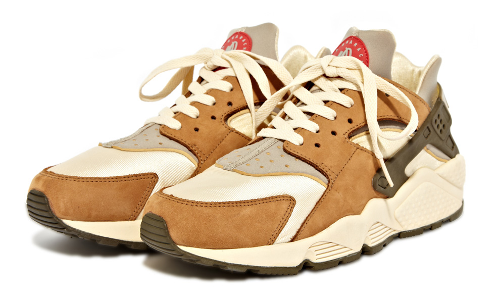
雙方早於 2000 年就有了初次的合作，由 Nike 聯名之父 Fraser Cooke 和同時為 Gimme 5 和 Stussy 倫敦店的首腦 Michael Koppelman 推動，針對他們都滿意的跑鞋鞋型上揉合兩種復古配色。在當時僅在倫敦少量發售，再售價格現大約在600美元上下。
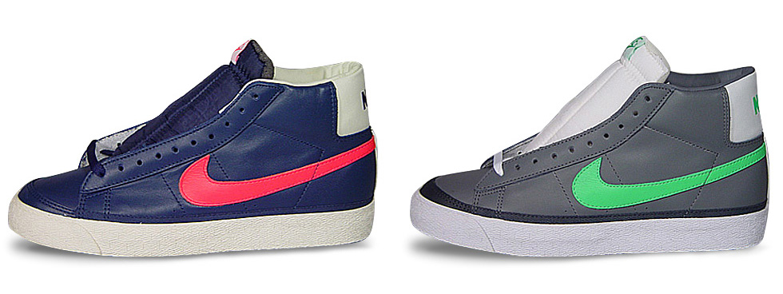
你可能記得近幾年不論是 Sacai、Off-White 甚至 Soulland 等品牌都對這雙鞋下過手，不過 Stussy 在 2002 年就已看到這雙鞋的魅力，推出了以籃球性能為出發點的款式，推出的兩種搶眼配色使它在 Stussy 與 Nike 合作的歷史上成為經典。
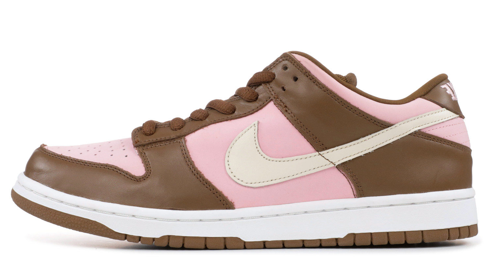
受到 Virgil 影響在近年回歸的 SB Dunk Low，早在 2005 年 Nike 就針對它推出 Team manager 系列（與四個街頭品牌與Nike自家共同推出的五雙 SB Dunk），而 Stussy 的款式則由知名攝影師 Robbie Jeffers 操刀，採用 Neapolitan Icecream 配色，香草、巧克力和草莓的顏色在鞋身上清晰可見，冰淇淋頂端作為點綴的櫻桃，則異曲同工的印在鞋舌上，翻開鞋墊甚至還能看到鬆餅的圖案。這雙發售量少又細節滿滿的鞋，入手難度可想而知，現為 Stussy 與 Nike 聯名中價格最高的款式。
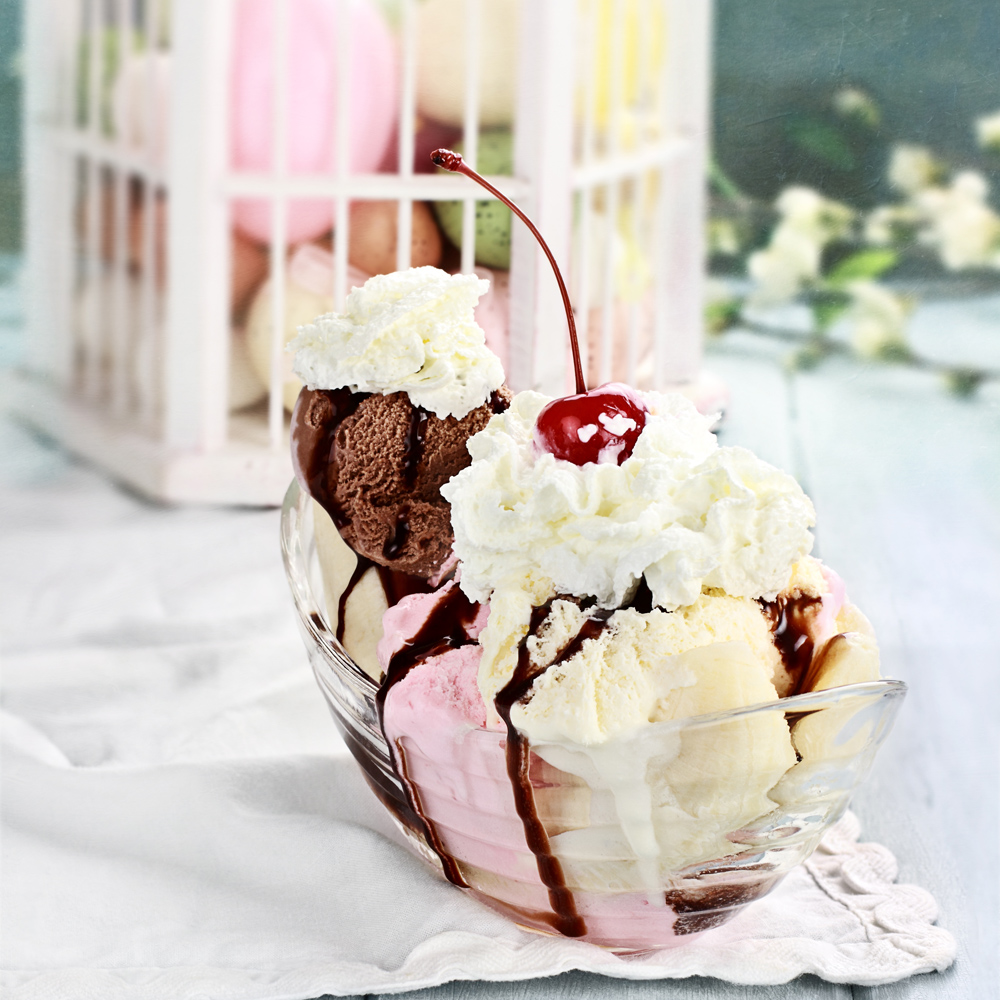
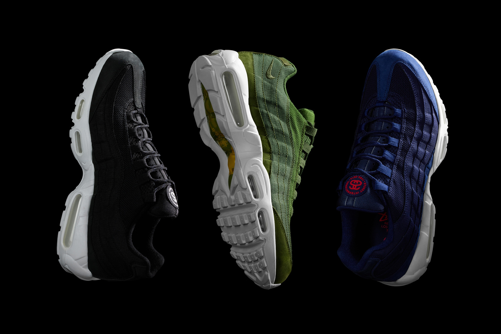
為慶祝Stussy成立35週年與Air Max 95的20週年，雙方一口氣推出三種配色，利用95獨特的外觀以相近色在鞋身上疊加，鞋舌與鞋墊上皆印有Stussy經典Logo，為不敗的經典款式添增現代美學。
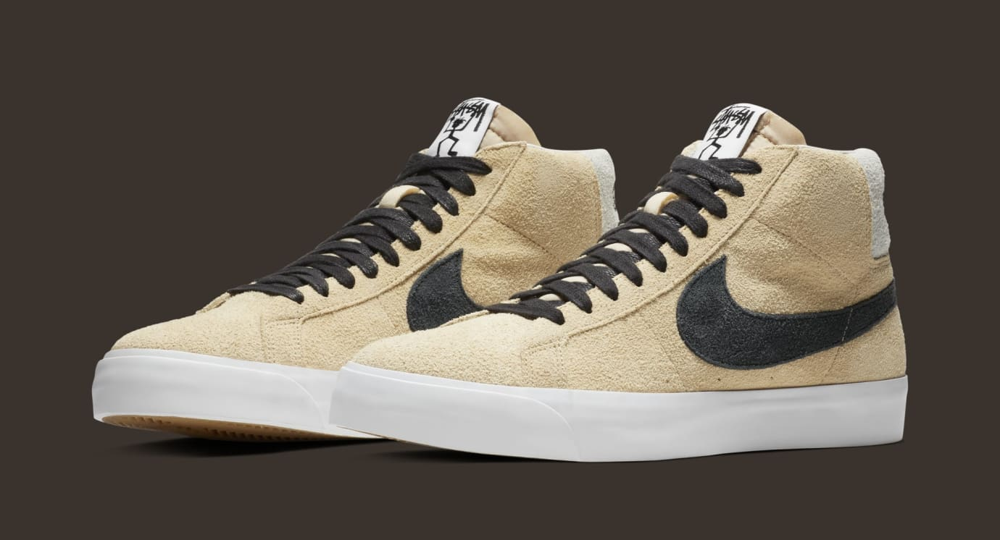
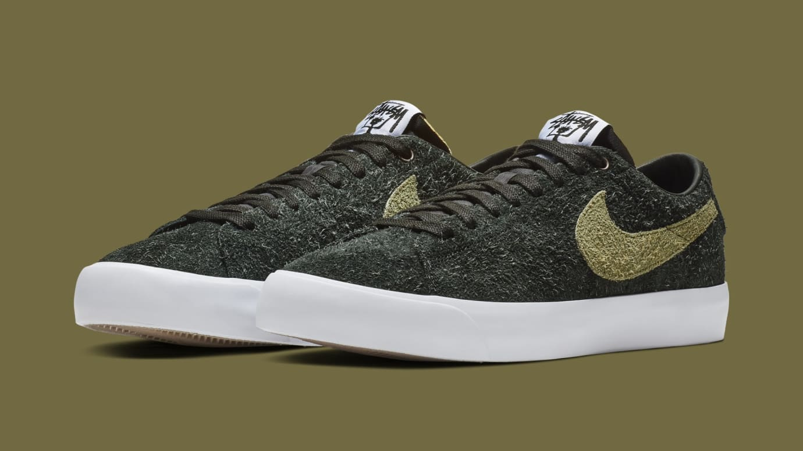
時隔數年 Stussy 又再次把目光放在 Blazer 上，為滑板選手 Keven Terpening 推出中、低筒兩種款式。毛絨鞋身配上近期最熱門的草寫 Logo 與 Stickman 標誌，甚至邀請滑板手 Lance Mountain 塗鴉創作出豹紋款式，只在 Stussy LA 與 DSM 限定販售。
參考資料：
https://www.complex.com/sneakers/nike-air-zoom-spiridon-cage-retro-steven-smith-stussy-history https://www.nicekicks.com/the-history-of-stussy-x-nike-collaborations/ https://www.sneakerfreaker.com/sneakers/a-brief-history-of-stussy-x-nike-collaborations/ https://www.gq.com/story/nike-stussy-air-zoom-spiridon-drop https://solecollector.com/news/2018/12/stussy-nike-sb-blazer-low-release-date